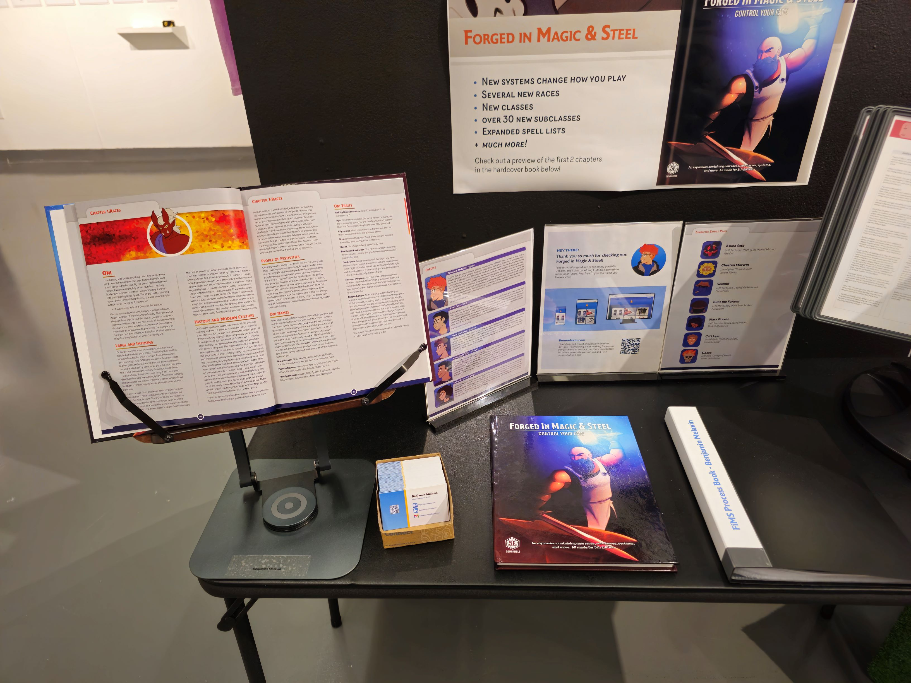
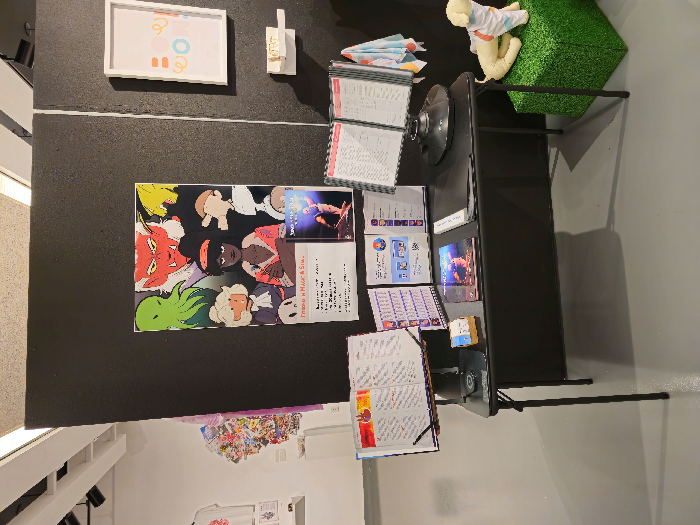

Forged in Magic & Steel is a expansion book that is in the process of being created for the 5th edition of a tabletop roleplaying game called “Dungeons & Dragons”. I am working with a small team of wonderful people as the creative lead. That being said, I still handle all of the design, illustration, and much of the writing. The people I work with help with the creation of new ideas, brainstorming, playtesting, and editing the content we have made together. This project could not have been made without their contributions, and we will continue to work together until the book is finished and hopefully able to be sold as a physical product!
What you see here is only a sample that was on display for the senior show at the College of Visual and Performing Arts at the University of Massachusetts Dartmouth. It includes the current version of chapters 1 and 2, with a placeholder cover. Already at the time of writing this, we have advanced further to giving the book a unique logo, new typefaces, and brand new cover art. We are intending to keep our body text typeface, and will pursue a license directly from the designer themselves rather than through Adobe Fonts. Spring 2024 is when I decided to fully commit to this project, after having worked on it lightly with my peers for the last few months. It became the subject for my graphic design capstone, allowing me to dedicate a large sum of time to it in and out of class. Our group met almost every Thursday during the course of my spring semester, either brainstorming, writing, or playtesting. The designs seen within our sample went through a few alterations, based on my own tweaks and the feedback from peers and visiting professionals alike. From the start I wanted to do something simple, yet elegant. I also tried to kept a similar style inspired by the handbooks made official for D&D 5th edition, with my own creative liberties.
This project has been a great chance to really push myself as not just a designer, but as a creative. I’ve had the opportunity to lead a project, write and create new content for a game I love, and create designs and artwork in ways I had not done before. Especially when considering we want to share the book after its completion, we had to keep in mind a few things. On the design front, we needed to ensure we had the licensing of the fonts we used (if needed at all). Relying on keeping a subscription at all times did not seem ideal, so we intend on getting a lifetime license to one of our fonts. The rest have been changed to open-source typefaces, which work even better with the style we had developed for the book over the course of the last 6 months. On the writing side, our group had to follow the SRD (System Rulebook Documents) for D&D 5e. What this meant for us is that we could only reference content from those documents. So later additions like the artificer class, or more unique creatures like the beholder, were completely off the table for us. While we had a lot of completely original content for the book, there was some that built upon concepts from the game. Our subclasses couldn’t use spells from other expansions, nor could we make anything for a class like the artificer. While this was upsetting, we pushed past it and worked towards making our content as best as it could be in spite of these restrictions. When incorporating the content into FiMS, I am referencing the style guides for expansion books made for 5th edition. Most rules are minor, such as spell names being italicized and lowercase. By doing this, however, our book feels more at home with other expansions while keeping its own distinct style. There is much more work to be done with Forged in Magic & Steel, and this portfolio page will be updated as we hit important milestones. I am excited to continue sharing it, and I hope to one day show off the final product here.